All the machines in the lab have Maya installed, if you want you use your own machine follow the installation guide.
It is essential that you have a mouse.
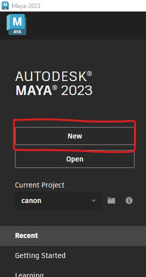
This will open up the polygon cube options panel.
Here you can change the properties of the cube.
The width, Height and Depth are the dimensions of the cube.
The divisions split the cube into multiple faces.
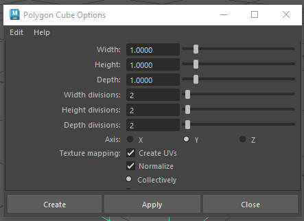
This will create a new polygon cube in the middle of your scene.
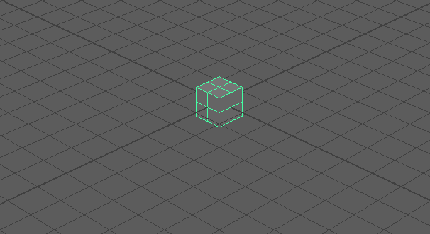
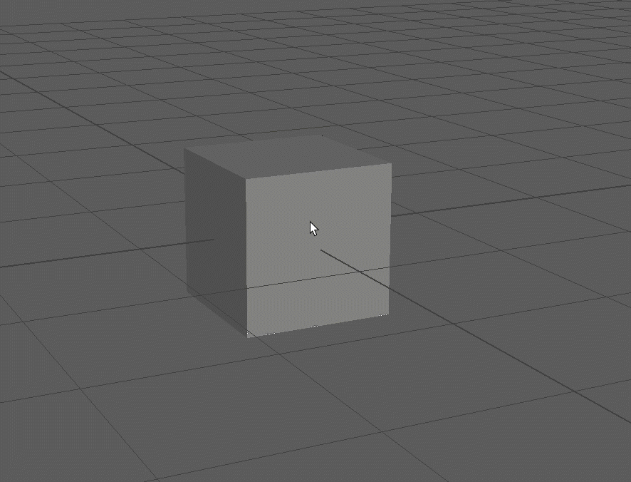
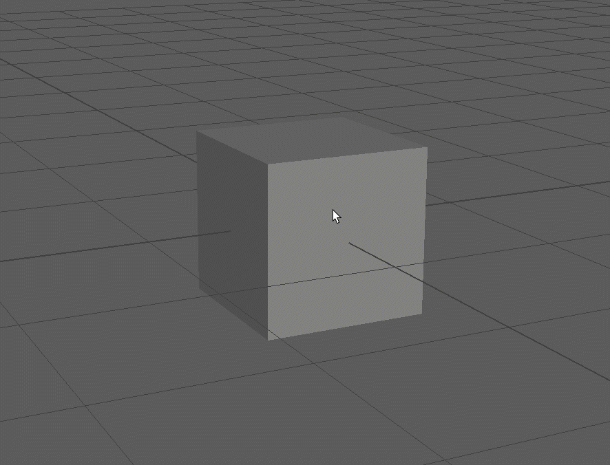
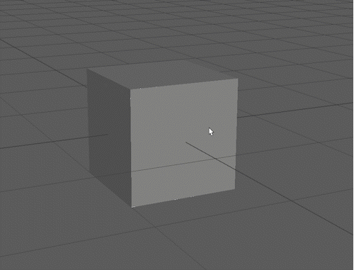
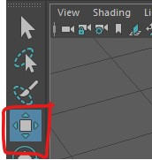

You should generally stick to the 3 coloured arrow. Avoid using the middle yellow square as this will move the cube relative to the camera.
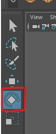

Avoid use the outer light blue ring as this will rotate the object relative to the camera.
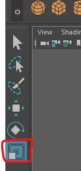

By default the units in Maya are set to centimetres.
A cube 1 hight is 1cm high.
As we are making a large object we want to change the units to meters.

Select Settings
Change the Linear Working Unitys to meter
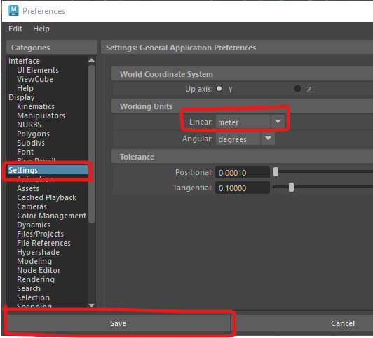
Now if we create a cube 1 height, it will be 1 meter.
This will be important when you light your scene or want to export it to another program like Unity.
Your cube may now appear very small.

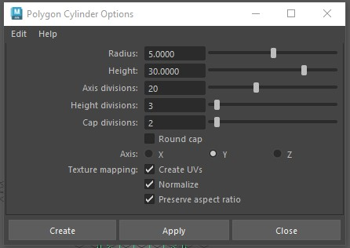
Change the radius to 5 and the height to 30
Increase the axis divisions to 20
Press Create to add the cylinder to the scene.
Do you remember how to move objects? Move the cylinder up above the grid.
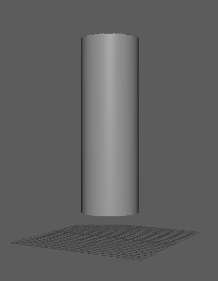
Add a cone by double clicking on the create cone button.
Choose values you think are appropriate for the options.
Press Create.
If you are unhappy with your choices you can select the cone and press delete to remove it and try again.
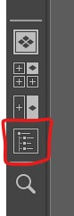
This will open the outliner panel which shows all the object in your scene.
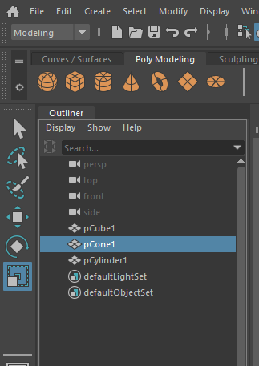
When using Maya save regularly to avoid loosing work.
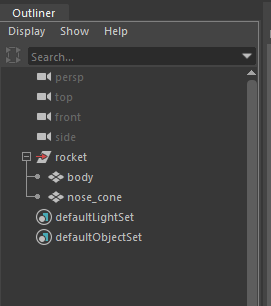
You can use the outline to select items that may be hard to select in the scene.
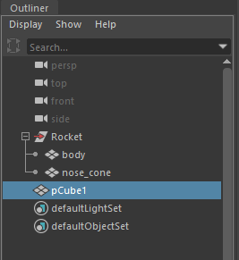
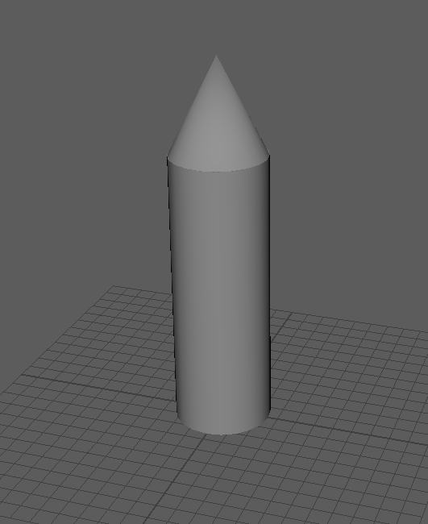
If can sometimes be difficult to select what you need to in your scene if an element is on top of another.
You can temporarily hide an object by selecting it and pressing h.
To show it again, select it in the outliner and press h again.
As you have already saved, you should now use Increment and save. This will create a new save file with a number at the end of the file name.
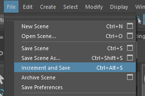
Increment and save it very helpful as it allows you to go back to previous versions of your model.
It is important that your centre your final object so that it appears where expected when imported into other programs.
The centre of your scene is called the origin, and is in the middle of the gird.
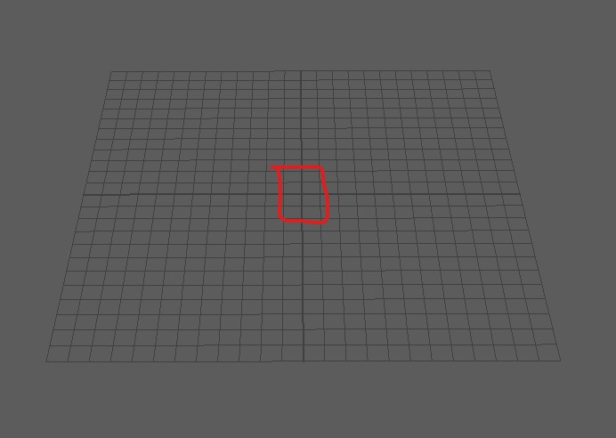
Your rocket may already be in the centre of the scene, but if it is not you need to do the following.
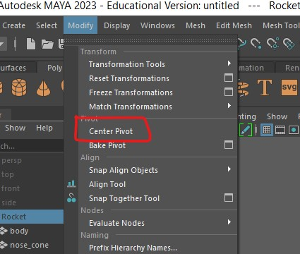
When creating 3D assets it is important that you are are aware of the polygon or triangle count. For the assignments this year we will give you a maximum that you need to stay bellow.
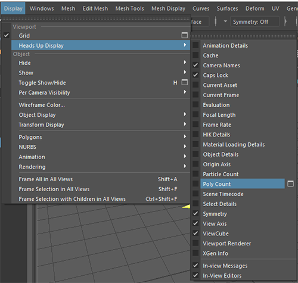
A box will now appear in your scene, the 2 numbers next to tris are the total number of triangles in your scene and the number in the currently selected object/s
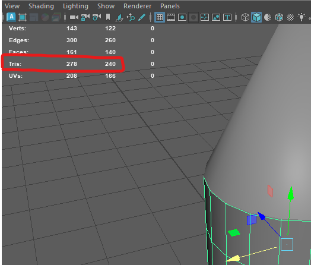
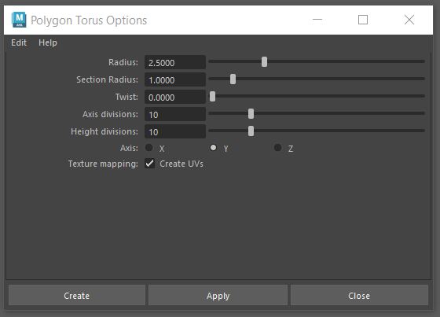
Press Create
Position the torus on the front of the rocket. TIP : hold down j before rotating to lock the rotation to 15 degree increments.
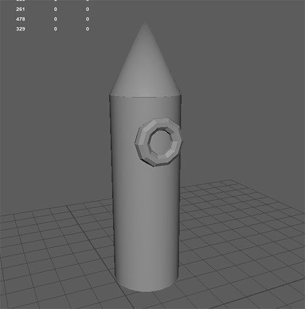
It is important that you don�t use ctrl and c as you normally would in other packages as this creates unwanted extra grouping in Maya.
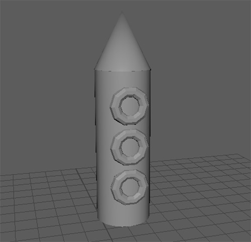
Rename the new windows in the outliner.
In the outliner you can now middle mouse click and drag the window into the rocket group

Your Maya skills will improve the more you practice, for this challenge practice the skill you have learnt so far.
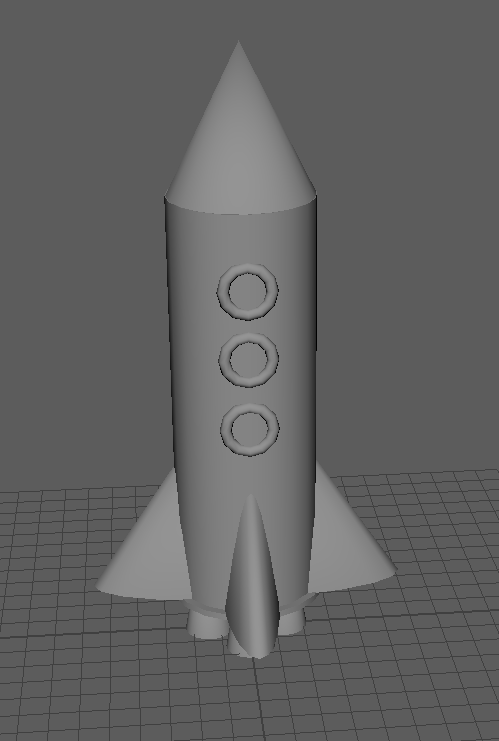